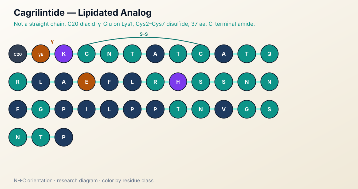

Metabolic
Cagrilintide
Long-Acting Amylin Analog

Scientific Overview
Cagrilintide is a lipidated analog of amylin, a pancreatic peptide involved in satiety signaling. Published work describes it as a long-acting amylin analog for receptor and metabolic research.
Mechanism focus: Amylin signals through calcitonin-receptor complexes with receptor-activity-modifying proteins. Research on cagrilintide focuses on that pharmacology and on how a prolonged amylin-receptor agonist behaves in experimental models.
Research Use Cases
- Amylin-receptor pharmacology
- Satiety and energy-balance signaling models
- Comparison with other metabolic peptide analogs
- Analytical identity of lipidated amylin analogs
Use-Case Study Notations
- Case-study notation: development papers describe cagrilintide as a long-acting amylin analogue.
- Case-study notation: later reviews place it in the amylin-receptor literature alongside other metabolic peptide research.
- This page summarizes research context. It does not state clinical outcome claims.
Selected Studies (English, PubMed)
Three peer-reviewed sources indexed on PubMed. Links open the PubMed record for verification.
- Development of Cagrilintide, a Long-Acting Amylin Analogue — PubMed 34288673
- Cagrilintide: A Long-Acting Amylin Analog for the Treatment of Obesity — PubMed 36883831
- Efficacy and Safety of Cagrilintide Alone and in Combination with Semaglutide (Cagrisema) as Anti-Obesity Medications: A Systematic Review and Meta-Analysis — PubMed 39676787
Related compounds
Research Use Only. This page is educational and intended for laboratory research context. Products are not for human consumption and are not intended to diagnose, treat, cure, or prevent any disease.